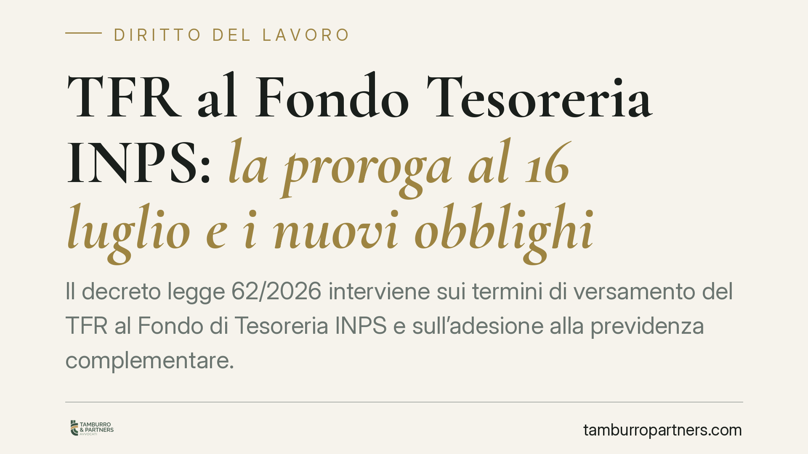

TFR al Fondo Tesoreria INPS: la proroga al 16 luglio e i nuovi obblighi
Il decreto legge 62/2026 interviene sui termini di versamento del TFR al Fondo di Tesoreria INPS e sull'adesione alla previdenza complementare. La nuova scadenza indicata è il 16 luglio 2026, ma i dettagli attendono le circolari attuative. La proroga sposta il termine, non cancella gli obblighi sostanziali a carico del datore di lavoro.

Il fatto
Secondo quanto riportato dalle prime fonti, il decreto legge 62/2026 (art. 16) sposterebbe al 16 luglio 2026 una scadenza relativa al versamento del TFR al Fondo di Tesoreria INPS e introdurrebbe novità sull'adesione automatica alla previdenza complementare.
Si tratta di una norma recentissima. In attesa della pubblicazione del testo definitivo e delle circolari INPS e Covip, i dettagli applicativi - inclusa la portata esatta della proroga - vanno considerati non ancora consolidati. Consigliamo prudenza nel trattare come definitivi dati che le amministrazioni non hanno ancora confermato.
Inquadramento normativo
Il Fondo di Tesoreria INPS è disciplinato dalla legge 296/2006 (art. 1, commi 755 e seguenti). Riguarda i datori di lavoro privati con almeno 50 addetti: per questi soggetti le quote di TFR maturate dal 2007, salvo diversa scelta del lavoratore verso la previdenza complementare, non restano in azienda ma confluiscono al Fondo gestito dall'INPS.
Non esiste, nella disciplina consolidata, una soglia di 60 dipendenti. Il riferimento dimensionale resta quello dei 50 addetti. Qualora il decreto 62/2026 introducesse adempimenti rafforzati per fasce dimensionali diverse, l'indicazione andrà verificata sul testo definitivo e sul comma che la prevede: allo stato non risulta confermata.
Il meccanismo va descritto con precisione. Alla cessazione del rapporto, di regola è il datore di lavoro a erogare l'intero TFR al lavoratore, recuperando poi in conguaglio le quote già versate al Fondo attraverso la denuncia contributiva mensile. L'INPS interviene con erogazione diretta solo nei casi tassativi previsti dalla normativa (ad esempio in caso di insufficienza delle risorse del datore o di accesso al Fondo di garanzia). Non è quindi corretto affermare che l'INPS "anticipi" il trattamento in via ordinaria.
Il termine ordinario di versamento al Fondo coincide con quello dei contributi previdenziali: il 16 del mese successivo a quello di maturazione. La proroga indicata dal decreto andrà letta in questo quadro, chiarendo - una volta noto il testo - se incide sul versamento mensile o sul conguaglio.
Sul fronte della previdenza complementare, la destinazione del TFR resta regolata dal d.lgs. 252/2005, che prevede il meccanismo del silenzio-assenso: in mancanza di scelta esplicita del lavoratore entro i termini, il TFR è destinato al fondo pensione di riferimento. Eventuali novità sull'adesione automatica si innestano su questo impianto.
Implicazioni pratiche
Per le imprese sopra soglia il punto centrale è uno: la proroga sposta il termine, non sospende l'obbligo. Le quote restano dovute e i conguagli vanno gestiti correttamente, pena sanzioni e interessi.
La destinazione del TFR produce effetti diversi:
- TFR in azienda (sotto i 50 addetti o per scelta del lavoratore): resta accantonato e rivalutato in bilancio;
- TFR al Fondo Tesoreria: confluisce all'INPS, con il datore che eroga e conguaglia;
- TFR a previdenza complementare: alimenta il fondo pensione, con un regime fiscale di norma più favorevole sulle prestazioni.
La scelta del lavoratore e la corretta tracciatura delle quote incidono su buste paga, denunce contributive e trattamento fiscale finale. Errori nella destinazione o nel conguaglio sono tra le contestazioni più frequenti in sede ispettiva.
Cosa fare in concreto
- Verifica la soglia. Controlla l'organico effettivo: se superi i 50 addetti rientri negli obblighi del Fondo di Tesoreria. Non basarti su soglie non confermate dal testo definitivo del decreto.
- Attendi le circolari attuative. Prima di modificare procedure interne, verifica le istruzioni operative di INPS e Covip sulla nuova scadenza e sulle modalità.
- Allinea il flusso di paga. Coordina ufficio personale e consulente del lavoro perché versamenti e conguagli rispettino i termini, anche se prorogati.
- Ricostruisci le scelte dei lavoratori. Conserva e aggiorna la documentazione sulla destinazione del TFR, incluse le ipotesi di silenzio-assenso ex d.lgs. 252/2005.
- Mappa il rischio sanzionatorio. Individua eventuali versamenti tardivi o conguagli errati pregressi e valuta la regolarizzazione.
Disclaimer
Contributo informativo a cura di Tamburro & Partners Avvocati. Non costituisce parere legale.
Ogni storia di lavoro ha i suoi tempi.
Se gestisci HR e vuoi un confronto su contenzioso, ispezioni o licenziamenti, scrivi allo studio. Ti rispondiamo entro un giorno lavorativo.